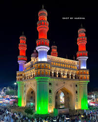
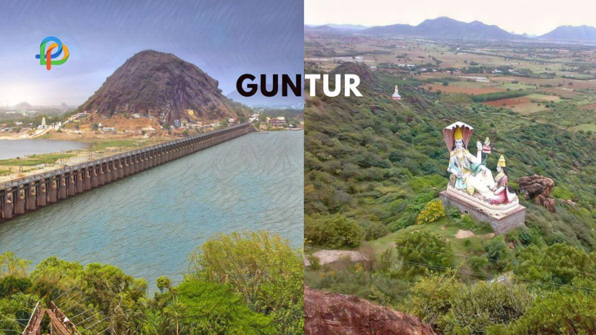
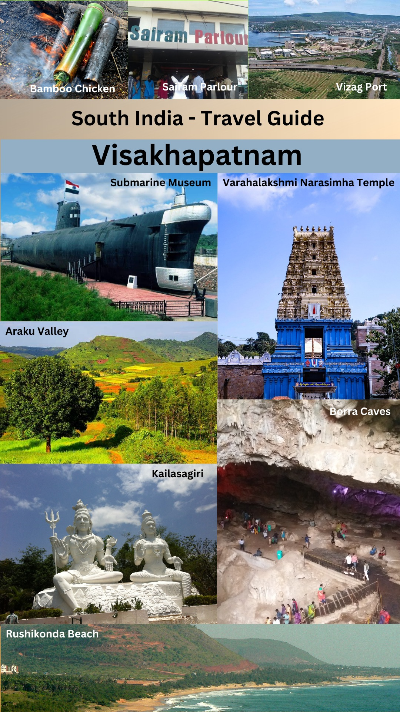

Hyderabad is the capital and largest city of the Indian state of Telangana. It's a major urban center located on the Deccan Plateau, known for its rich history, diverse culture, and booming technology industry. The city is also called the "City of Pearls" and is famous for its cuisine, particularly Hyderabadi Biryani.
Here's a more detailed look:
Geography and Climate:
Situated on the Musi River, Hyderabad has a warm to hot, monsoonal climate. The city is spread across the Deccan Plateau and features a mix of hilly terrain and artificial lakes.
History and Culture:
Founded in 1591, Hyderabad boasts a rich history under the Qutb Shahi and Nizam dynasties. It's a blend of Hindu and Muslim cultures, with influences from both North and South India.
Economy:
Hyderabad is a major IT and pharmaceutical hub, often referred to as Cyberabad. It's a center for global companies and has a strong biotechnology sector.

Tourism:
Landmarks like the Charminar, Golconda Fort, and Mecca Masjid attract tourists. The city also offers attractions like Hussain Sagar Lake, Ramoji Film City, and numerous palaces.
Cuisine:
Hyderabadi cuisine is famous for its Biryani, Irani Chai, and Haleem.
Twin City:
Hyderabad shares its metropolitan area with its twin city, Secunderabad, connected by a walkway across Hussain Sagar Lake.
Guntur district is located in the Coastal Andhra region of Andhra Pradesh, India. It's known for its agricultural production, particularly chili peppers, and its rich history. The district's headquarters is located in the city of Guntur,
 which is also the largest city in the district.
About Vizag, Visakhapatnam City, Tourism and History ...Visakhapatnam, also known as Vizag, is a coastal city in Andhra Pradesh, India, famous for its picturesque beaches and rich cultural heritage. It's a major port city and an important industrial center, often called "The Jewel of the East Coast". The city boasts a vibrant culture, with Telugu and Oriya languages spoken, and is known for its friendly and welcoming people.
Here's a more detailed look:
Location and Geography:
Visakhapatnam is situated on the eastern coast of India, nestled between the Eastern Ghats and the Bay of Bengal.
Tourism:
Vizag is a popular tourist destination, attracting visitors with its beautiful beaches like RK Beach and Rushikonda Beach, where water sports are also available.
Culture:
The city has a rich cultural past, with festivals like Ugadi (Telugu New Year) being a significant celebration. Traditional handicrafts, like those found at Lepakshi Handicrafts Emporium, showcase the region's artistic heritage.
Historical Significance:
Visakhapatnam is one of the oldest port cities in India. The Sri Varaha Lakshmi Narasimha temple in Simhachalam is a prominent Hindu temple located on a hill within the city.
People:
The locals are known for their amiable and helpful nature.